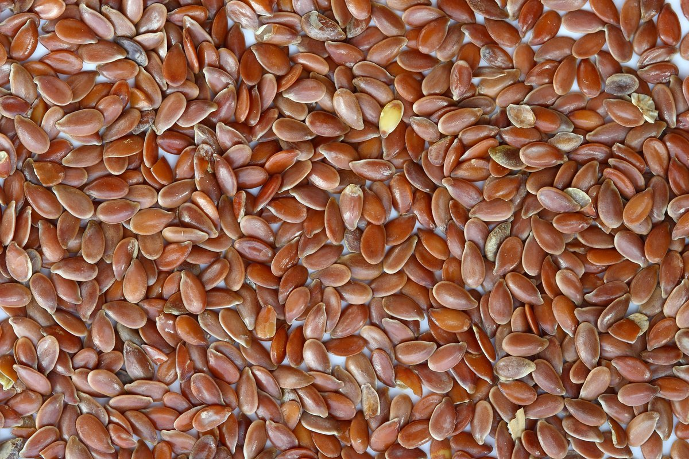
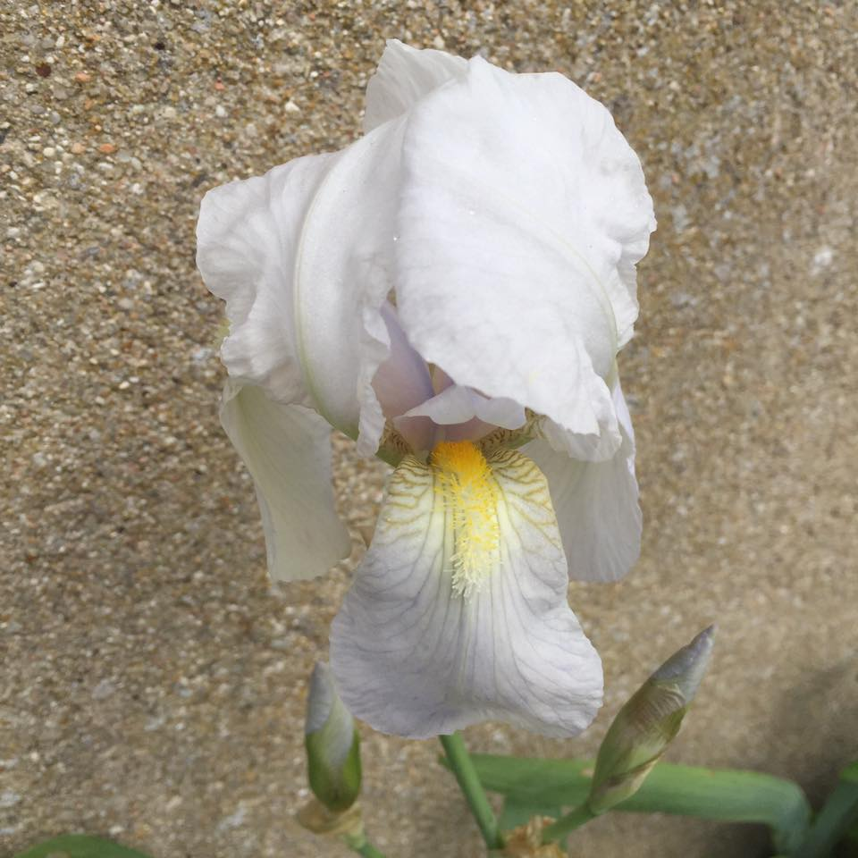
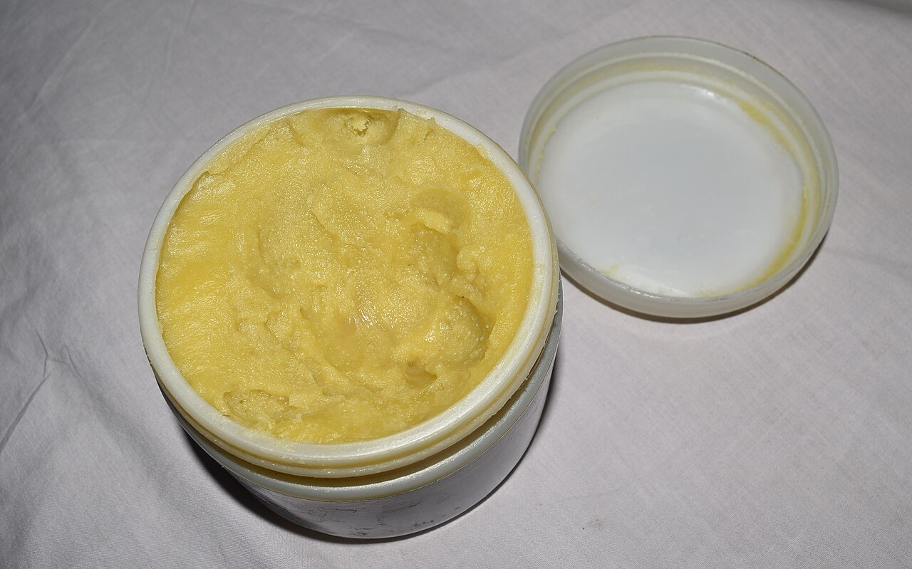

L'Herbier Botanique de Martine
Chaque plante, graine et beurre végétal est sourcé auprès de producteurs respectant les cycles de la terre. Zéro dérivé pétrochimique, zéro solvant de synthèse.

Lin Brun de Normandie
Cultivé sans irrigation intensive. Son mucilage extrait à froid gaine la cuticule capillaire sans laisser de film collant.

Racine d'Iris de Florence
Maturée trois années avant broyage fin. Absorbe le sébum avec une douceur veloutée tout en diffusant un sillage poudré noble.

Beurre de Karité Brut
Extrait artisanalement par des coopératives de femmes. Conservé sans solvant pour préserver vitamines et insaponifiables.
Lavande & Néroli Doux
Distillés à la vapeur d'eau douce. Nos hydrolats tonifient le cuir chevelu et calment les irritations naturellement.
Notre Charte Pureté Sans Compromis
Toutes nos formules solides et liquides sont élaborées en synergie avec la Savonnerie de Teillet-Argenty (Maison Lelégard).
Explorer les Huit Confections